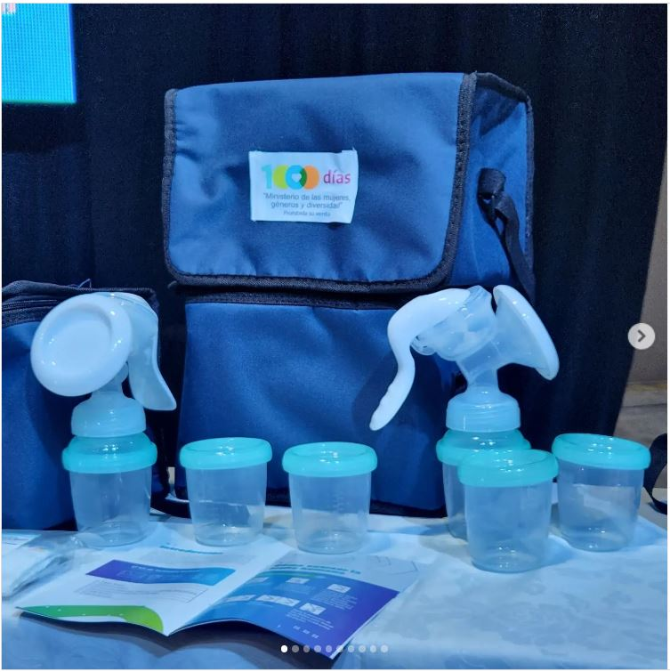
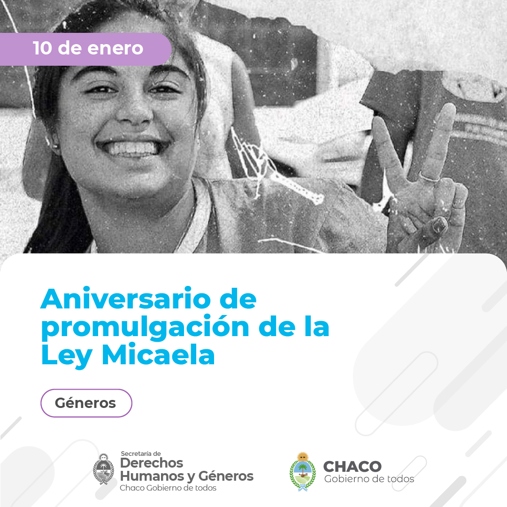
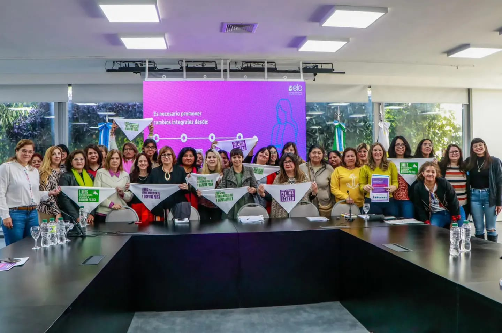

Laboral12 . MAYEntrega de kits de lactancia
Se realizo la entrega de kits de lactancia en el marco del Plan 1.000 dias, con la presencia de la ministra de Mujeres, Genero y Diversidad y autoridades provinciales.
Leer mas
Laboral12 . MAYSe realizo la entrega de kits de lactancia en el marco del Plan 1.000 dias, con la presencia de la ministra de Mujeres, Genero y Diversidad y autoridades provinciales.
Leer mas
Generos19 . ENEA anos de su promulgacion, renovamos el compromiso con la Ley Nacional N 27.499 por un Chaco mas justo e igualitario.
Leer mas Capacitacion03 . ABR
Capacitacion03 . ABRJunto a ECOM Chaco y la vicegobernacion, se presento una serie de microprogramas de 6 minutos para medios publicos.
Leer mas Laboral27 . MAR
Laboral27 . MARSe habilito la inscripcion al Registro de Solicitantes de Empleo Travesti-Trans en toda la provincia del Chaco.
Leer mas Capacitacion15 . FEB
Capacitacion15 . FEBContinuan las capacitaciones a equipos de la administracion publica en perspectiva de diversidad e identidad de genero.
Leer masLa Direccion acompano la Marcha del Orgullo en Resistencia junto a organizaciones sociales y referentes de la comunidad.
Leer mas
Generos05 . MARLa Direccion avanzo en la implementacion de medidas para proteger los derechos de personas TLGBIQ+ frente a situaciones de violencia politica.
Leer mas